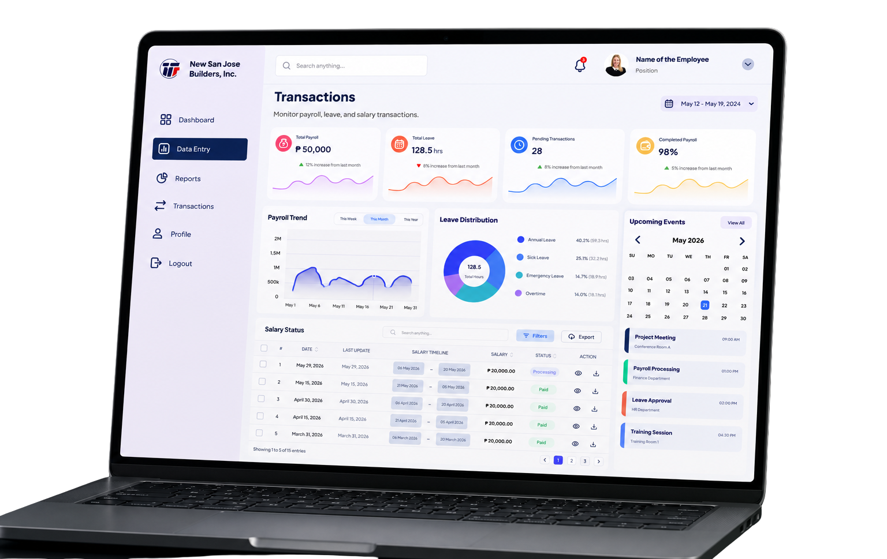
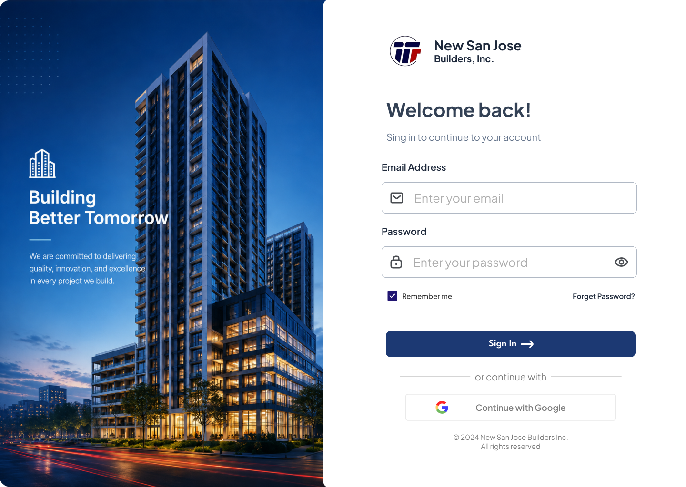
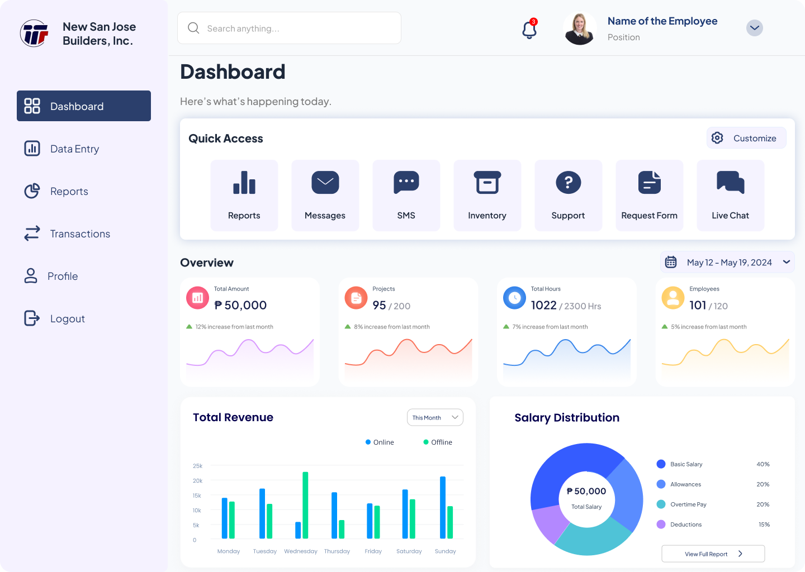
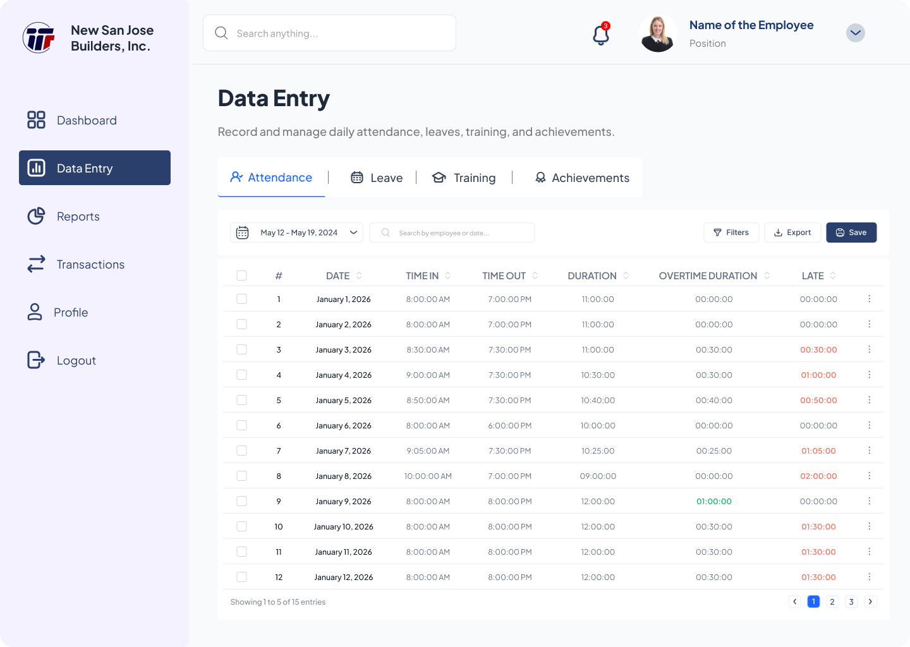
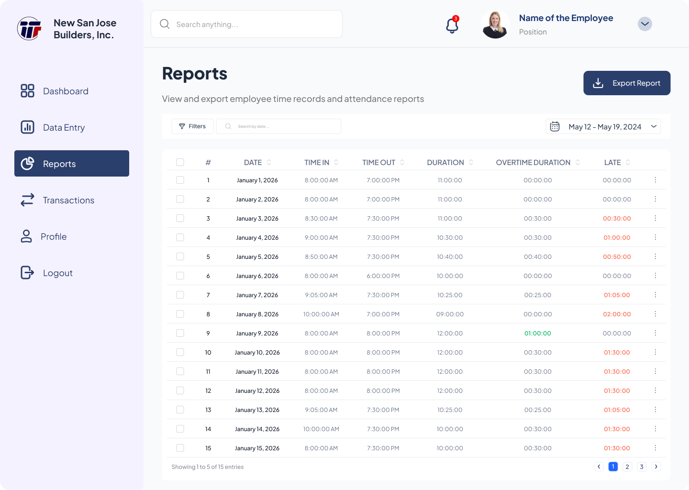
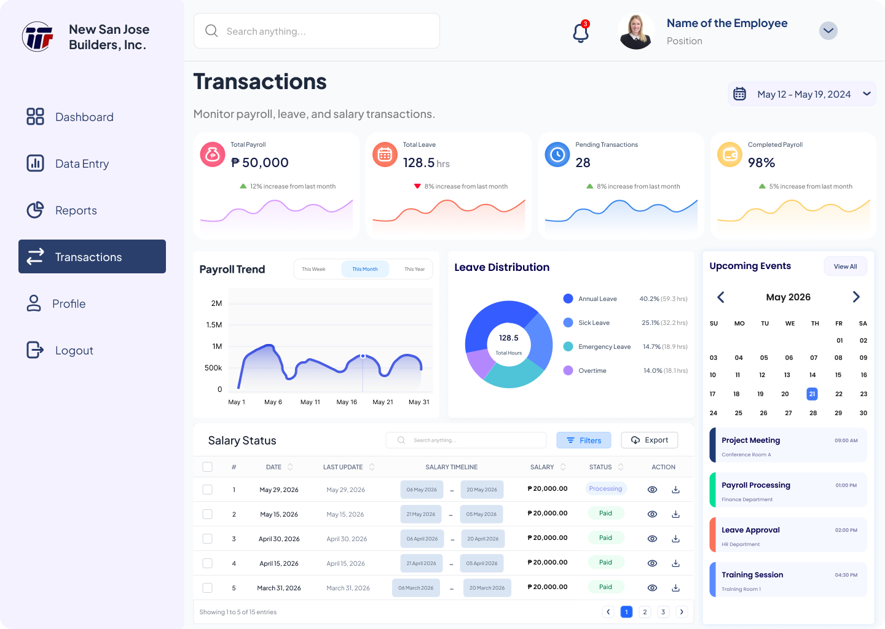
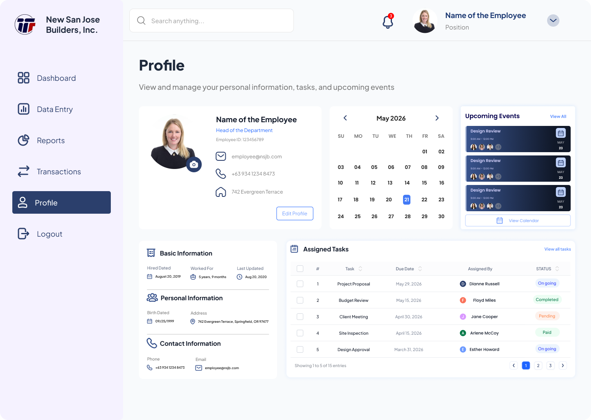

Employee Management
View and manage employee profiles, personal information, employment details, and other important records through a centralized system.
A web-based employee management system designed during my internship at New San Jose Builders Inc. to streamline employee records, attendance, leave, training, achievements, transactions, and reporting through a centralized and user-friendly dashboard.

The Employee Management System was designed during my internship at New San Jose Builders Inc. to provide a centralized platform for managing employee information, attendance, leave, training, achievements, transactions, and reports.
Employee Management System is a web-based platform concept created as part of my internship at New San Jose Builders Inc. The project was initiated by the company as a proposed system for managing employee records and HR-related information in a more organized and accessible way.
As a UI/UX Designer Intern, I focused on translating the company's requirements into a structured dashboard experience, designing the interface, organizing information, and creating consistent layouts for different employee management functions.
New San Jose Builders Inc.
2 Months
UI/UX Designer
Internship Project
View and manage employee profiles, personal information, employment details, and other important records through a centralized system.
Record and monitor employee time-in, time-out, working hours, overtime, and late attendance in an organized table.
Provide dedicated sections for managing employee leave requests, training records, and other employee development information.
Generate attendance reports and manage employee-related transactions while keeping important records accessible and organized.
Managing employee information involves multiple types of records, from attendance and leave to training, achievements, transactions, and reports. The proposed EMS was designed to bring these functions together into one structured and accessible web-based experience.
The company needed a concept for an Employee Management System that could organize different employee-related processes in one platform. The challenge was to structure a large amount of information while keeping the interface simple and easy to navigate.
Employee information is composed of different types of records, such as personal details, attendance, leave, training, and achievements. These needed to be organized into clear sections.
Attendance and reports contain large amounts of information, including time-in, time-out, duration, overtime, and late records. The interface needed to present this data without becoming overwhelming.
The EMS needed to accommodate different functions such as Data Entry, Reports, Transactions, and Employee Profiles while maintaining a consistent experience.
I designed a structured dashboard that organizes the proposed EMS into clearly defined sections, making employee information and HR-related records easier to access and manage.
Employee profiles bring personal information, employment details, and related records into one organized view.
Attendance, leave, training, and achievements are separated into dedicated sections to make data management more structured.
Reports use organized tables, filters, date ranges, and export actions to make employee attendance data easier to review.
A unified navigation system, visual hierarchy, spacing, and component styles were applied across the different sections of the EMS.
Every design decision from navigation and information hierarchy to table layouts and dashboard components was focused on making the proposed EMS easy to understand and efficient to use for employees and administrators.
The research phase focused on understanding the company's requirements for the proposed Employee Management System and identifying how employee-related information could be organized into a clear and efficient interface.
Rather than conducting a large-scale user study, I focused on understanding the requested system functions, reviewing the information that needed to be presented, and translating those requirements into a structured UI/UX solution.
Understanding what the company needed
The first step was identifying the core functions that NSJB wanted to include in the EMS. These requirements helped define the main sections and navigation structure of the system.
Organizing complex employee data
I analyzed how employee information flows and how each function is connected. This helped ensure the system structure is logical, efficient, and easy to navigate.
Identifying opportunities for improvement
I reviewed the existing approach to employee-related information and considered how a centralized web application could improve the organization and presentation of data.
Defining the priorities for the design
From the research and requirements gathering, I established several design priorities to guide the UI/UX process.
Make complex employee information easy to understand.
Group related functions into logical sections.
Reduce unnecessary navigation when accessing employee records.
Maintain consistent components, layouts, and interactions throughout the system.
Create a structure that can accommodate additional features in the future.
Different types of employee information require dedicated sections to prevent the interface from becoming overwhelming.
Attendance and report data contain many fields, so spacing, typography, filters, and status indicators are important for quick scanning.
The sidebar and page structure should allow users to move naturally between employee information, data entry, reports, and transactions.
Reusable components and consistent design patterns create a more predictable experience across the EMS.
This research helped shape the structure, navigation, and overall experience of the proposed Employee Management System, ensuring that all employee-related processes are organized, accessible, and efficient to use.
To create a clear, organized, and user-friendly Employee Management System, I followed a structured design process from research to final UI design.
Understanding the company's requirements and the main functions needed for the proposed EMS.
Summary of features and system functions needed.
Organizing the information and defining the system structure, user flows, and features of the EMS.
Structure and flow of the system's main processes.
Exploring design ideas and layouts for each module to find the best way to present information.
Initial layout and structure for each page.
Creating high-fidelity designs with a consistent visual style, components, and interactions.
Complete UI screens with components and styles.
Reviewing the design for clarity, usability, and consistency based on requirements and best practices.
Refined designs based on feedback and validation.
Preparing the final design for handoff with organized assets, specifications, and documentation.
Final design files, assets, and documentation.
The process was iterative — feedback and requirements were continuously considered to improve the design.
The final design of the EMS provides a clean, organized, and user-friendly interface that makes it easier to manage employee information, records, and company data in one centralized system.

Secure login access for employees to enter the system.

Overview of employee attendance, upcoming events, and important summary information.

Record and manage daily attendance including time in, time out, overtime, and late records.

Generate attendance reports with filters and export options for easy data management.

Manage payroll, benefits, loans, and other employee transactions in a structured table.

View and manage employee profile, personal information, and employment details.
Designing the Employee Management System during my internship at New San Jose Builders Inc. strengthened my understanding of how UI/UX design can be applied to a real-world business system. Working on a proposed employee management platform challenged me to think beyond individual screens and consider how different functions, information, and workflows could work together as one consistent experience.
Throughout this project, I learned how important information hierarchy, consistency, and organization are when designing a system that handles large amounts of employee data. Working with features such as attendance, leave, training, achievements, transactions, reports, and employee profiles helped me understand how complex information can be structured into clear and accessible sections without overwhelming the user.